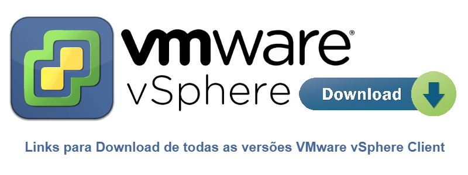

Links para Download de todas as versões VMware vSphere Client
BlogCompartilhe esse post nas redes sociais...
Olá Homelabers!
Vejo que o pessoal sempre tem dúvida de como acessar o vSphere (ESXi) após a instalação. Muitos se confundem e não sabem que é necessário instalar o VMware vSphere Client para a sua versão. Esse client logo será aposentado, mas hoje ainda é uma realidade e é praticamente impossível gerenciar um ambiente apenas com o web client.
Vou deixar uma lista aqui com link para download de todas as versões do VMware vSphere Client. Dessa maneira você não precisa de uma conta no my.vmware.com para fazer o download.

Não esqueça de bookmark essa página e volte sempre que uma nova versão estiver disponível.
Lista de Download de todas as versões do VMware vSphere Client
Version
Bônus: Como instalar o vSphere Client
Abra o browser e acesse https://ip-do-seu-servidor-esxi/

Clique em “Download vSphere Client” e faça o download do arquivo que tem aproximadamente 350MB.

A instalação do vSphere Client é bem simples: aceite todos os defaults e next, next, finish.


Abra o vSphere Client e coloque as informações de IP, User name e Password do seu servidor ESXi.

Na tela de aviso de segurança, marque para instalar o certificado e depois clique no botão Ignore.

Clique em OK na próxima tela para aceitar a licença de avaliação.

Seja bem-vindo ao seu novo servidor VMware ESXi novinho em folha! 😀

Fonte: VMware KB - Download URLs for VMware vSphere Client (2089791)
Compartilhe esse post nas redes sociais...Valdecir Carvalho
Nerd e pai orgulhoso da Mariana e João. Profissional Sênior de TI com foco em arquitetura de infraestrutura e cloud computing. Blogueiro, podcaster, palestrante, amante de comunidades técnicas, fotógrafo aposentado e adora jogos antigos.
#vExpert · #VMUGLeader · #VUGBrasil · #vBronwBagBrasil · #VeeamVanguard